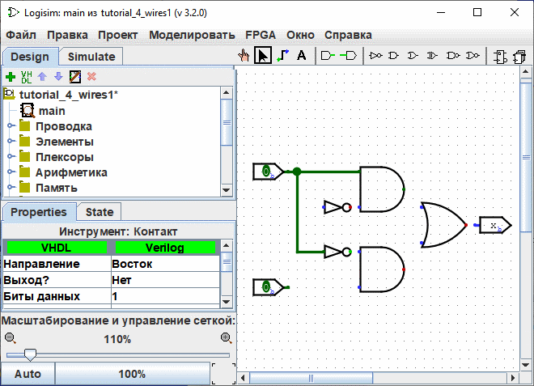
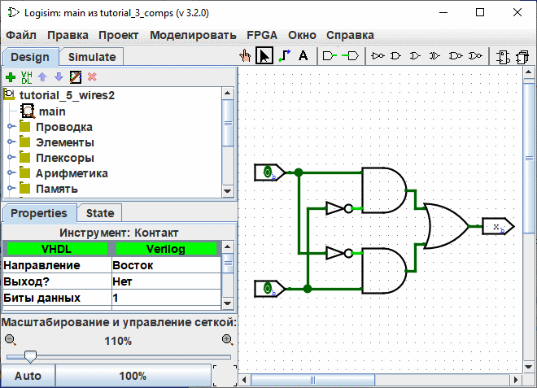

Предыдущий: Шаг 1: Добавление логических элементов
Шаг 2: Добавление проводников
После размещения всех необходимых компонентов на холсте можно переходить к трассировке электрических связей (проводников). Активируйте базовый инструмент «Выбор» ( ). При наведении курсора на точку подключения (вывод) любого компонента вокруг неё появится маркер в виде маленького зелёного кружка. Зажмите левую кнопку мыши в этой точке и потяните линию для формирования проводника.
). При наведении курсора на точку подключения (вывод) любого компонента вокруг неё появится маркер в виде маленького зелёного кружка. Зажмите левую кнопку мыши в этой точке и потяните линию для формирования проводника.

Среда автоматического проектирования самостоятельно управляет электрическими узлами: каждый раз, когда линия связи утыкается в другую цепь, система автоматически создаёт соединение. Изменение длины или конфигурации уже проложенного сегмента проводника выполняется путём перетаскивания его концевых точек или изломов с помощью того же инструмента «Выбор».
Трассировка в Logisim-evolution выполняется строго по ортогональной сетке — линии могут быть только горизонтальными или вертикальными. Чтобы соединить верхний входной контакт с инвертором «НЕ», а затем с входом вентиля «И», потребуется проложить три последовательных ортогональных отрезка.

При формировании Т-образных разветвлений цепей Logisim автоматически отрисовывает узловую точку (электрический контакт), подтверждающую физическое соединение проводников. Если в месте пересечения двух линий точка отсутствует, это означает, что цепи изолированы друг от друга.
В процессе сборки схемы некоторые линии могут временно окрашиваться в синий или серый цвет:
- Синий цвет сигнализирует о неопределённом логическом состоянии цепи (U / X) — на линию не подаётся чёткий уровень нуля или единицы (например, на свободных входах вентилей);
- Серый цвет указывает на обрыв линии или отключённое состояние цепи с высоким импедансом (Z-состояние).
Появление этих цветов в процессе монтажа абсолютно нормально. Однако к моменту завершения проекта на холсте не должно оставаться неинициализированных (синих) или оборванных (серых) сигнальных линий. Единственное исключение в данном уроке — неиспользуемые входы элемента «ИЛИ», которые допустимо оставить синими.
Важное правило монтажа:Если после завершения трассировки проводник остаётся синим или серым, это указывает на ошибку коммутации. Линии связи необходимо подводить строго к портам подключения на корпусах компонентов. При корректном сопряжении маркеры выводов изменят свой цвет с синего на рабочий тёмно- или светло-зелёный.
Когда все электрические связи проложены верно, цепи окрашиваются в оттенки зелёного цвета (тёмно-зелёный соответствует логическому 0, светло-зелёный — логической 1).
